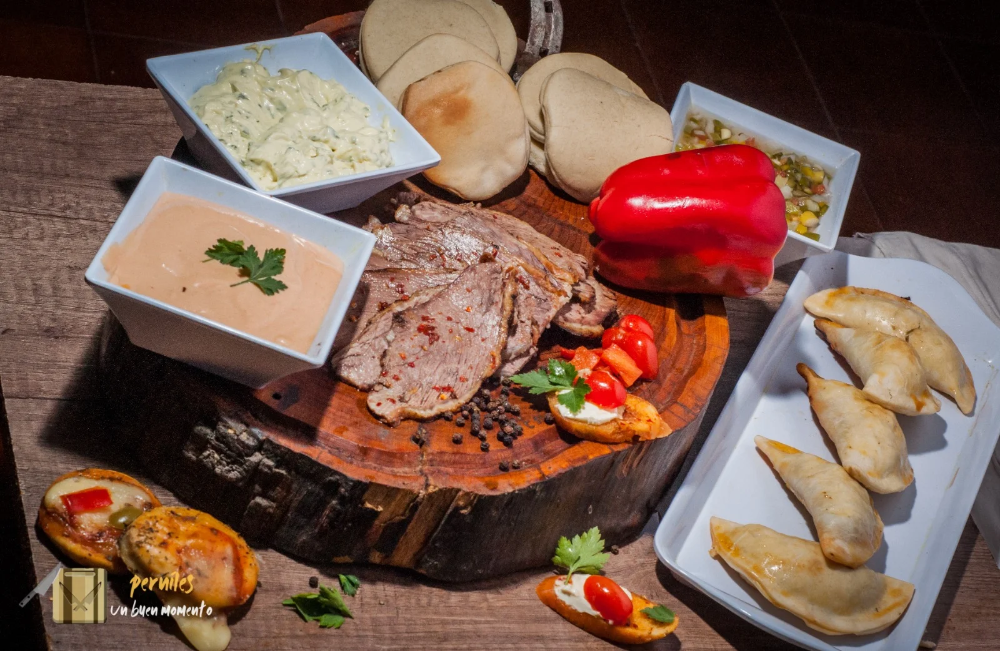
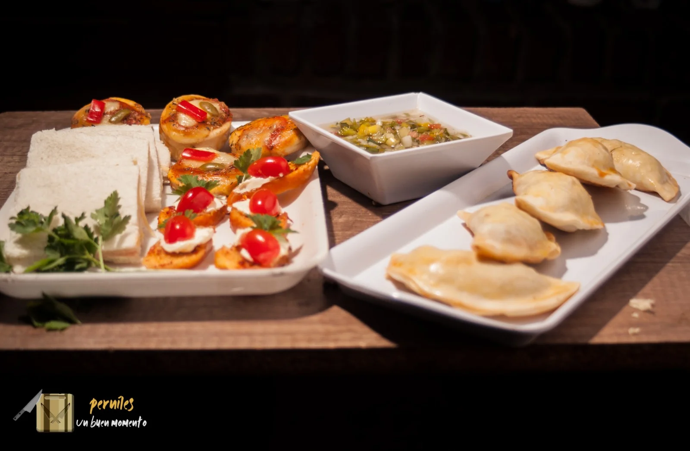

Te resuelve la comida
Una opción práctica para no complicarte organizando platos difíciles o servicios innecesarios.
Servicio de pernil para cumpleaños, fiestas, reuniones familiares y eventos sociales en Neuquén capital. Una propuesta práctica, abundante y rica para resolver la comida del evento sin complicarte y hacer que la mesa se vea mejor.
Los perniles funcionan porque son prácticos, rendidores y visualmente atractivos. Te ayudan a ofrecer una comida que se disfruta, se comparte fácil y hace que el evento se vea mejor sin entrar en complicaciones.
Una opción práctica para no complicarte organizando platos difíciles o servicios innecesarios.
Es una propuesta conocida, tentadora y fácil de disfrutar en cumpleaños, reuniones y celebraciones.
Cuando la mesa se ve abundante y bien presentada, todo el encuentro transmite mejor imagen.
Ya sea un cumpleaños, un festejo familiar, una reunión especial o un encuentro social, el pernil tiene algo muy valioso: convoca, viste la mesa y genera una experiencia relajada pero con presencia.

La propuesta se adapta al tipo de encuentro, a la cantidad estimada de invitados y a lo que querés ofrecer en la mesa.
Una opción cálida, rendidora y sabrosa para cumpleaños, reuniones y celebraciones donde querés algo rico y bien presentado.
Incluye panes y complementos para una experiencia más completa, más tentadora y más disfrutable.
Podés complementar con empanadas, bruschettas u otras opciones simples que acompañen bien la propuesta.
Ideal para eventos sociales y encuentros donde importa ofrecer algo que guste y sea fácil de compartir.
Una buena presentación abre el apetito antes del primer bocado. Estas fotos muestran una propuesta pensada para que la comida se vea rica, abundante y lista para disfrutar.





Porque combinan tres cosas que importan de verdad: gustan, rinden y ayudan a resolver la comida del evento de una manera simple, abundante y atractiva.
Son una opción cómoda para servir a varias personas sin perder practicidad.
Es una comida simple de comer, compartir y disfrutar en distintos formatos de evento.
La presentación suma mucho y hace que la mesa llame la atención desde el inicio.
Resolvé la comida con una propuesta clara, rica y que genera buena experiencia.
Cuando un servicio sale bien, se nota en lo que la gente dice. Estas opiniones están pensadas para reforzar la confianza y acercarte más a la decisión de compra.
Acá tenés respuestas claras para que sea más fácil avanzar y decidir si esta propuesta es la indicada para tu evento.
Trabajamos con cumpleaños, fiestas, reuniones familiares, celebraciones especiales y encuentros sociales en Neuquén capital y alrededores.
La propuesta se centra en el servicio de pernil. Según lo que necesites, se puede complementar con panes, acompañamientos, empanadas, bruschettas u opciones simples para sumar a la mesa.
Muy fácil. Escribinos por WhatsApp con la fecha, la cantidad estimada de personas y el tipo de evento. Con eso te respondemos con una propuesta clara.
Sí. El servicio está orientado principalmente a Neuquén capital, con atención directa y rápida por WhatsApp.
Enviános la fecha, la cantidad estimada de personas y el tipo de evento. Te respondemos con una propuesta clara para que puedas organizarte rápido.